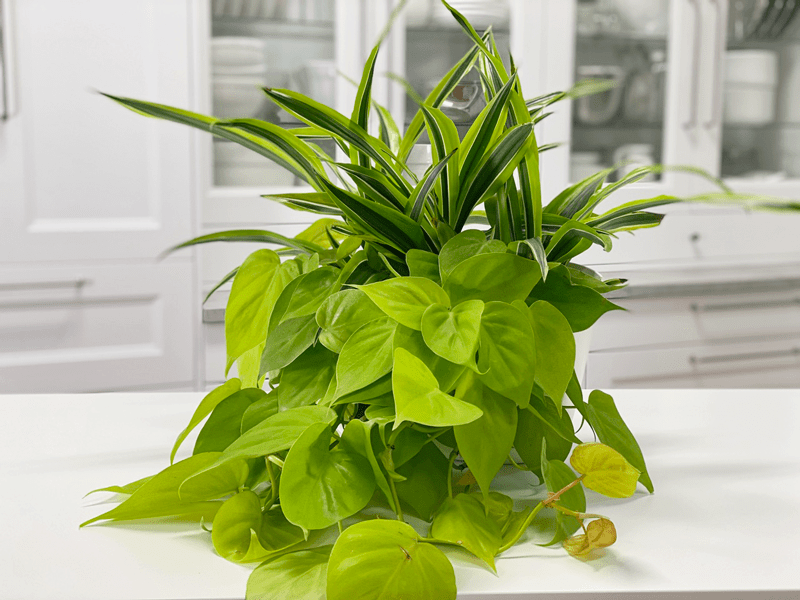
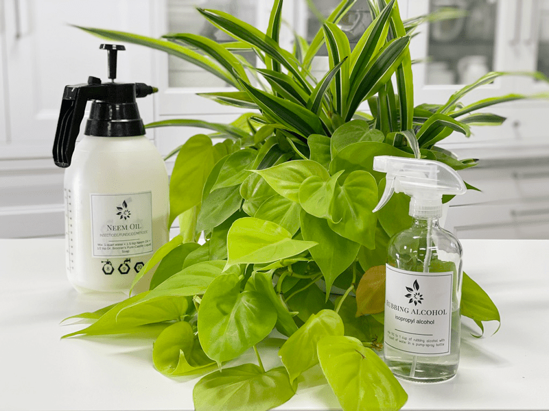

Philodendron | Lemon Lime | Care Difficulty – Easy
The Philodendron ‘Lemon Lime’ reminds me of the neon pothos. In fact, it can be quite easy to confuse the two. But really, who cares… they’re both beautiful and unique in color. The color of the leaves ranges from shades of bright yellow to chartreuse. Its cascading stems can grow quite long, almost 12′! It can be trained on a trellis or used as a trailing plant in hanging baskets and containers.

Decorating with Plants
When making your plant selections, first analyze the décor and layout of your living space. Is it a formal or informal living space? Is it rustic or chic? Does it get sunlight or no sunlight? All of these things will help narrow your choices. Another way to round out your décor is to use plant containers that match the color and style of the room. The planter or pot that houses your plant is just as important to the overall décor as the plant itself. I will talk more about this in another post, but I just wanted to get the decorating wheels turning.
Water Requirements
- Water your Philodendron ‘Lemon Lime’ well and allow the top 50% of the soil to dry before watering again.
- Yellow leaves may indicate overwatering, while brown leaves mean the plant needs more water.
- Never, ever let your Philodendron ‘Lemon Lime’ completely dry out. If you do this repeatedly, the lower leaves will yellow and turn brown, and the plant will get leggy.
- I like to take all my plants to the kitchen sink and thoroughly soak the soil, allowing all the water to drain out. Make sure you water around the entire pot and not just in one area.
- Water more often in the growing season and reduce the frequency during the winter months.
Light Requirements
Philodendrons prefer medium to bright indirect sunlight but can live in lower light conditions. However, their leaves will be smaller, and the vines will become leggy if the light is not bright enough. It is best to keep it out of the direct sun, which will burn foliage.
Optimum Temperature
Most household temperature ranges are adequate for these indoor plants. Letting them remain in temperatures under 55 degrees (F) will stunt their growth. Avoid cold drafts and heat vents.

Fertilizer – Plant Food
Use a diluted solution of a complete liquid fertilizer every two weeks throughout the growing season. Do not fertilize during the winter months, since most plants go dormant in the colder months. Sometimes your indoor plants will grow all year long. If this is the case, fertilize them with a 1/4 strength diluted liquid fertilizer, or top dress the soil with worm castings or rich compost. If you overfeed your plants, they will let you know. Here are a few things to watch for:
-
Yellowing or browning leaves.
-
The top surface of the soil may be white or crusty.
-
The leaves of the plant will start dropping off.
-
The roots can begin to rot.
If you overfeed a plant, you can remove the houseplant from its current soil and repot it in fresh soil. This technique is undoubtedly the best way to get rid of the excess nutrients affecting your plant. Alternatively, you can flush the soil, which involves drenching the soil with water and letting it drain out. Repeat this several times to help the soil get rid of excess fertilizer.

Additional Care
-
Remove any dead, discolored, damaged, or diseased leaves and stems as they occur with clean, sharp scissors. Snip stems just above a leaf node; new growth will emerge from this cut.
-
Clean the leaves often enough to keep dust off. You can wipe the plant down regularly with diluted rubbing alcohol to deter insects from the plant.
-
About every six months, I like to give the plant some preventative treatments against the wildlife of plants (AKA – bugs). I spray them down with a
rubbing alcohol solution, then wipe it off of each leaf with a clean cloth. After that, I spray it down with a
neem oil solution. I will share all of this in another detailed post.
Plant Characteristics to Watch For
Diagnosing what is going wrong with your plant is going to take a little detective work, but even more patience! First of all, don’t panic and don’t throw out a plant prematurely. Take a few deep breaths and work down the list of possible issues. Below, I am going to share some typical symptoms that can arise. When I start to spot troubling signs on a plant, I take it into a room with good lighting, pull out my magnifiers, and begin with a thorough inspection.
Pinkish-yellow leaves
- Do not remove the pinkish-yellow leaves. They aren’t dying… instead, they are NEW growth!
The vines are leggy, with small leaves.
The base of the plant is looking sparse.
-
If you allow the vines to grow long and never prune, the top of the plant, in the pot, can become sparse.
-
Solution: If the base of the plant is looking sparse, it is time to trim the vines. Doing this will cause the plant base to become lusher. Cutting right after a leaf node (the place where the leaf is attached to the stem) will encourage the stem to branch out, giving you a fuller plant.
- Alternative solution: Pinch growing tips for bushier growth.
The leaves are soft and wilting.
-
Wilting is caused by dry soil.
-
Solution: Although the plant will quickly bounce back after a good drink, make sure to water it regularly. Frequent droughts can put the plant under a lot of stress.
Yellow leaves
- Yellow leaves often indicate overwatering.
- Solution: Allow the plant to dry, just until the leaves start to droop. Then take the plant to the kitchen sink and saturate the soil with enough water until it starts to run out of the drain holes. From this point on, keep a closer eye on your watering schedule.
Brown Leaves
-
If the leaves are turning brown, it can be a sign of underwatering.
-
Solution: Take the plant to the kitchen sink and drench it with water. It is best to use plant containers with drainage holes in the base. I like to give it a good dose of water, let it soak in, add more water, let it soak in…repeat until the water runs out of the base.
Fungus gnats
-
Fungus gnats are harmless, except if you want to keep your sanity. They love to hang out in front of your face, testing your will and composure. They love wet, peaty potting mixes. You’ll find these tiny black fly-like insects crawling on the soil.
-
Solution: Check in on your watering habits. Keeping the soil too wet makes a breeding ground for these gnats. There are several different treatments to help keep the population under control. Click
(here) to learn more.
Common Bugs to Watch For
If you want to have healthy house plants, you MUST inspect them regularly. Every time I water a plant, I give it a quick look-over. Bugs/insects feeding on your plants reduces the plant sap and redirects nutrients from leaves. Some chew on the leaves, leaving holes in the leaves. Also watch for wilting or yellowing, distorted, or speckled leaves. They can quickly get out of hand and spread to your other plants.
IF you see ONE bug, trust me, there are more. So, take action right away. Some are brave enough to show their “faces” by hanging out on stems in plain sight. Others tend to hide out in the darnedest of places, like the crotch of a plant or in a leaf that has yet to unfurl.
-

-
Mealybugs.
-

-
The plant is a pothos, but mealybugs can attack other plants.
- Mealybugs look like small balls of cotton. They can travel, slooooooowly, but they have a strong will and determination! Though they are slow-moving, if any plant is touching another, there is a chance the mealybug will hitch a ride on a new leaf and spread. They breed like rabbits of the insect world. Females can deposit around 600 eggs in loose cottony masses, often on the underside of leaves or along stems.
- Scales are dark-colored bumps that are primarily immobile insects that stick themselves to stems and leaves. They are rather inconspicuous and don’t look like a typical insect. They can range in color but are most often brownish in appearance. They’re called “scales” primarily due to their scale-like appearance on a plant, due to waxy or armored coverings. They are often seen in clumps along a stem, sucking away at the plant’s juices with their spiky mouthpart.
- Spider mites are more common on houseplants. They are not insects – they are related to spiders. These appear to be tiny black or red moving dots. Spider mites are nearly invisible to the naked eye. You often need a magnifying lens to spot them, or you may just notice a reddish film across the bottom of the leaves, some webbing, or even some leaf damage, which usually results in reddish-brown spots on the leaf.
Toxicity
All parts of this plant are toxic to humans, as well as to dogs and cats. They contain insoluble calcium oxalates, which are poisonous if ingested. The symptoms of poisoning from ingesting a philodendron may be a burning sensation on the tongue or lips and throat. Often, the later stages of philodendron ingestion include vomiting and diarrhea. Keep the plant high up and out of reach from any vulnerable members of your family; this includes pets.
© AmieSue.com